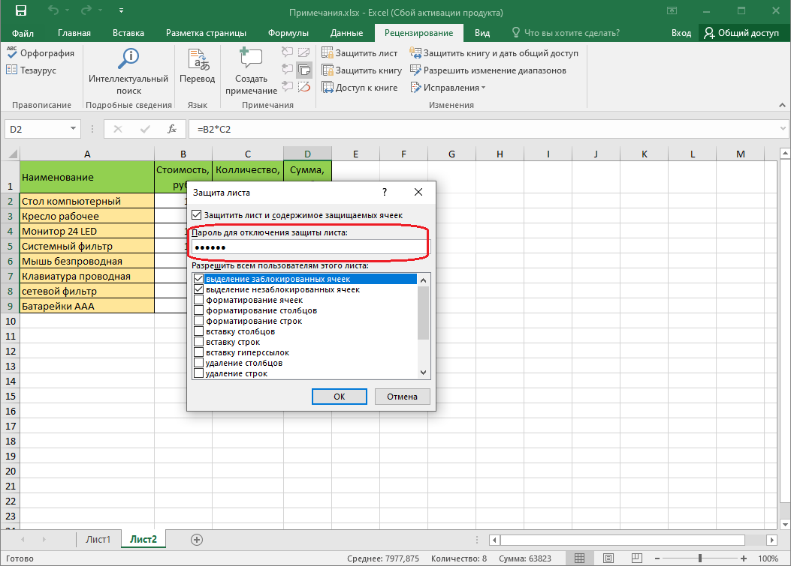
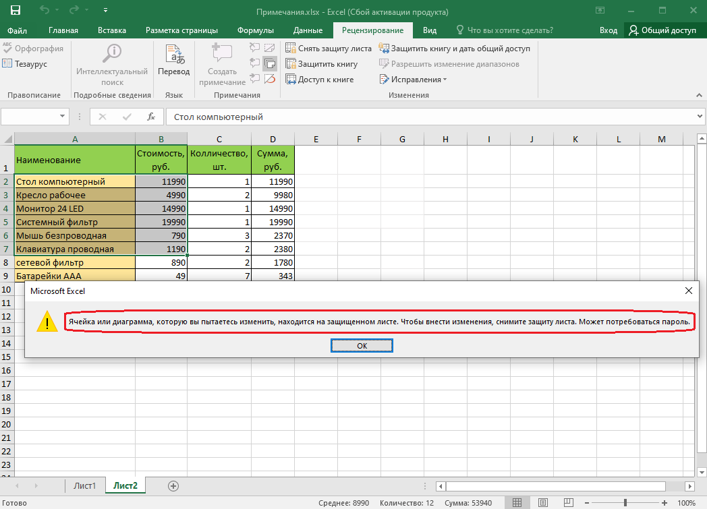
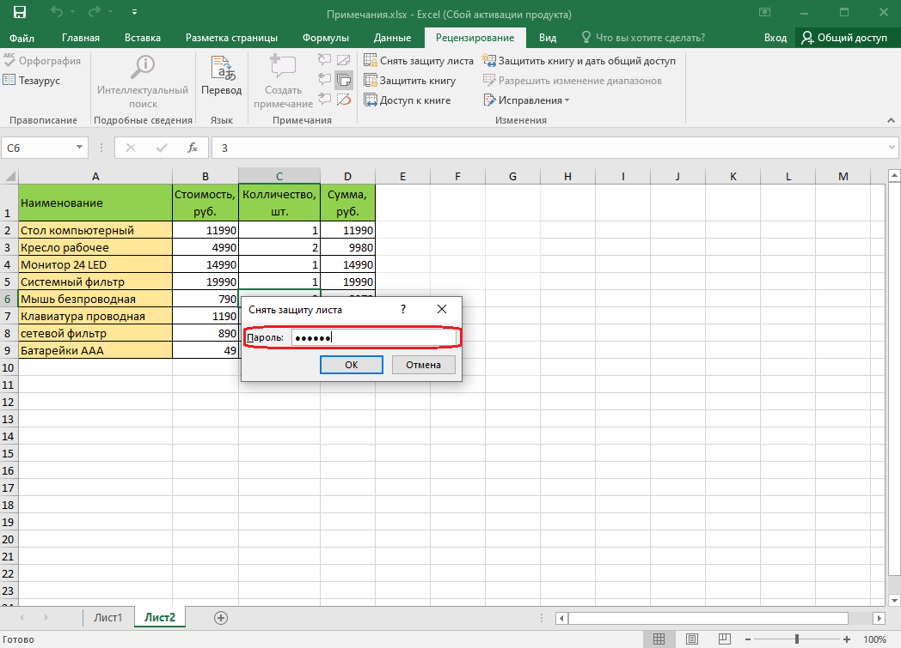
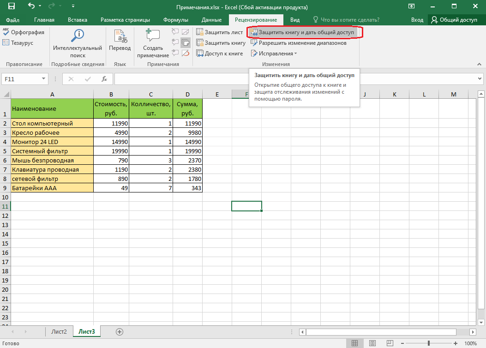
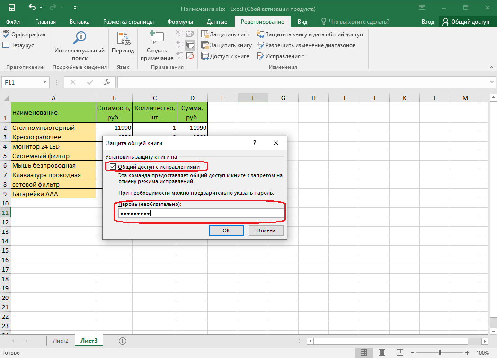
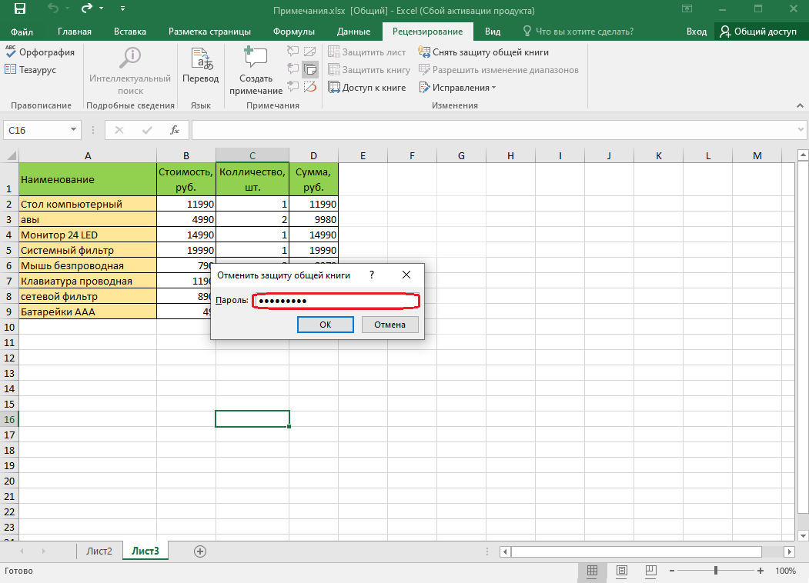

Microsoft Office Exel
Снятие пароля
Снять пароль можно только после открытия файла.
1. Нажмите кнопку Office, а затем выберите команду Сохранить как.
2. В окне Сохранение документа нажмите кнопку Сервис выберите команду Общие параметры.
3. В окне Параметры сохранения (см. рис. 13.17) очистите поле Пароль для изменения и нажмите кнопку ОК.
4. В окне Сохранение документа нажмите кнопку Сохранить. Если файл сохраняется под существующим именем в исходную папку, подтвердите замену существующего файла.
Защита листа
Защита всех ячеек листа
По умолчанию все ячейки листа являются защищаемыми. Однако перед установкой защиты следует проверить защищаемость ячеек.
1. Выделите все ячейки листа.
2. Нажмите кнопку Формат в группе Ячейки вкладки Главная и выберите команду Формат ячейки или щелкните правой кнопкой мыши по выделенным ячейкам и в контекстном меню выберите команду Формат ячеек.
3. Во вкладке Защита окна Формат ячеек (см. рис. 13.20) должен быть установлен флажок Защищаемая ячейка.
Можно защитить как данные на листе, так и структуру листа.
1. В группе Изменения вкладки Рецензирование нажмите кнопку Защитить лист.
2. В окне Защита листа (рис. 13.22) в поле Пароль для отключения защиты листа введите пароль, а в списке Разрешить всем пользователям этого листа установите флажки, разрешающие определенные действия. Перед установкой разрешений необходимо установить флажок Защитить лист и содержимое защищаемых ячеек и нажмите кнопку ОК.

3. В окне подтверждения пароля введите его еще раз.
При попытке выполнения на листе неразрешенных действий, появится окно сообщения (рис. 13.23).

Защита отдельных ячеек листа
В некоторых случаях возникает необходимость защитить только часть ячеек листа, оставив возможность вводить данные в остальные ячейки защищенного листа.
1. Выделите ячейки, не подлежащие защите.
2. Нажмите кнопку Формат в группе Ячейки вкладки Главная и выберите команду Формат ячейки или щелкните правой кнопкой мыши по выделенным ячейкам и в контекстном меню выберите команду Формат ячеек.
3. Во вкладке Защита окна Формат ячеек (см. рис. 13.20) снимите флажок Защищаемая ячейка.
4. Установите защиту листа обычным порядком.
Снятие защиты листа
1. В группе Изменения вкладки Рецензирование нажмите кнопку Снять защиту листа.
2. В окне Снять защиту листа (рис. 13.24) введите пароль и нажмите кнопку ОК.

Защита книги
Можно защищать от изменений структуру книги и окно книги.
Под защитой структуры книги от изменений понимается запрещение действий с листами книги.
Под защитой окна книги понимается запрет перемещения, изменения размеров, скрытие, показ и закрытие окон.
1. В группе Изменения вкладки Рецензирование нажмите кнопку Защитить книгу.

2. В окне Защита общей книги (рис. 13.26) установите флажок общий доступ с исправлением для защиты структуры книги. В поле Пароль введите пароль и нажмите кнопку ОК.

3. В окне подтверждения пароля введите его еще раз.
Снятие защиты книги 1. В группе Изменения вкладки Рецензирование нажмите кнопку Защитить книгу и выберите команду Защита структуры и окон (см. рис. 13.25).
2. В окне Снять защиту книги (рис. 28) введите пароль и нажмите кнопку ОК.

^ Наверх